ScaleSeeDesigned and built · 13 min read
A billion is easy to write and hard to picture, so I drew it to scale.
ScaleSee is a web tool I designed and built on my own. Pick two amounts of the same kind, and it draws them side by side at the same scale.
- Role
- Design and build, solo
- Why
- Big numbers are easy to read and hard to picture
- Timeline
- August 2026
- Platform
- Web, on desktop and phone. It opens from a file, with no server
- Stack
- Plain HTML, CSS and JavaScript. Drawings in SVG. No libraries
- Status
- Working web tool. Not tested with readers, no usage numbers
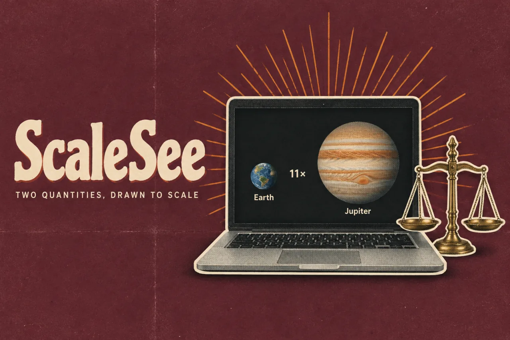
In short
- The problem: written down, a million and a billion differ by three zeros. As cash, one is a single brick of notes and the other is a block taller than a person.
- What I built: a web tool with 11 kinds of quantity, each drawn its own way, with true and log scale, a link for every comparison and a picture you can save.
- The key idea: show the true gap first. When a picture has to be squashed to fit, it says so.
- Where it stands: it works on desktop and phone, in light and dark. Nobody has tested it with readers yet, and I have no usage numbers.
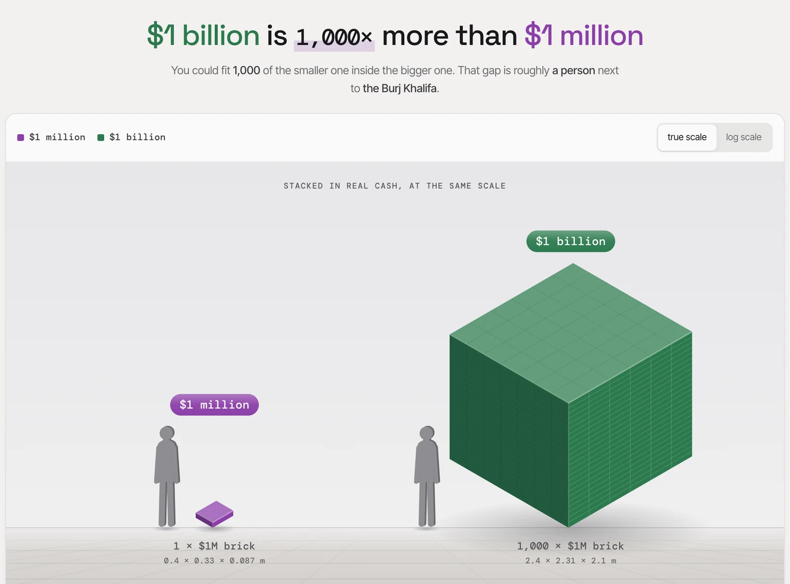
01 Why I built it
Three zeros on paper are a thousand times the cash
A ratio can be easy to read and still hard to picture. Written down, $1 million and $1 billion look alike: the second just has three more zeros. In $100 bills, the first is one brick about 9 cm thick. The second is a block 2.1 metres tall.
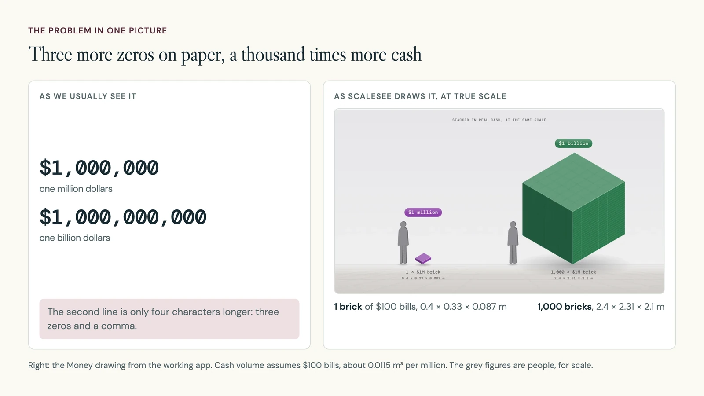
I wanted a tool where you pick any two amounts of the same kind and see them side by side, to the same scale. The same idea works for height, land, weight, time and six other kinds of quantity.
02 How it works
Two amounts in, one sentence and one drawing out
You choose a category, then type two amounts. Each side has a number and a unit. Money also has a currency, so 1 crore can sit next to $1 million.
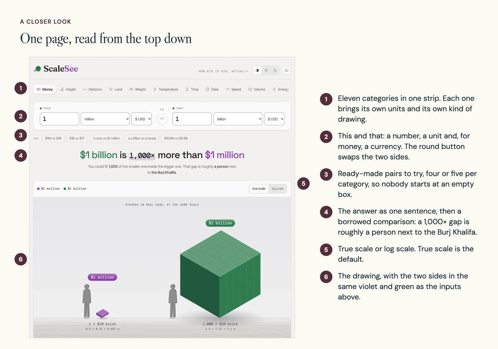
The sentence states the ratio and how many of the smaller one fit inside the bigger one. Then it borrows a pair of real things with about the same gap. A 1,000× gap reads as "roughly a person next to the Burj Khalifa".
There are 11 categories, and each one draws its amounts in its own way.
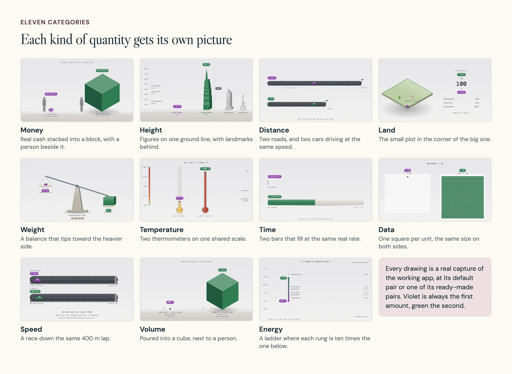
Under the drawing, a table gives both amounts in other terms. For money, that means the time it takes to count the cash out at one dollar a second, or what it weighs. At the bottom is a list of real reference points. Pick one and it loads on the right side, so you can walk up the scale.
03 Decision 1
Each quantity gets a picture that fits it, not one chart for all
What you see: money is cash stacked into a block. Land is the small plot laid in the corner of the big one. Weight is a balance. Speed is a race down the same 400 m lap.
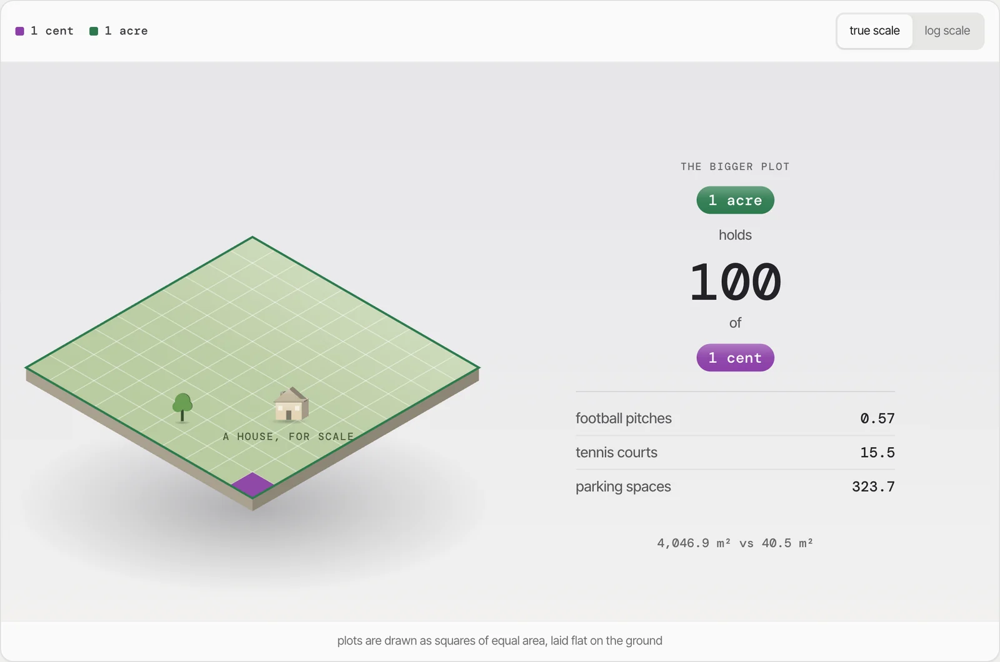
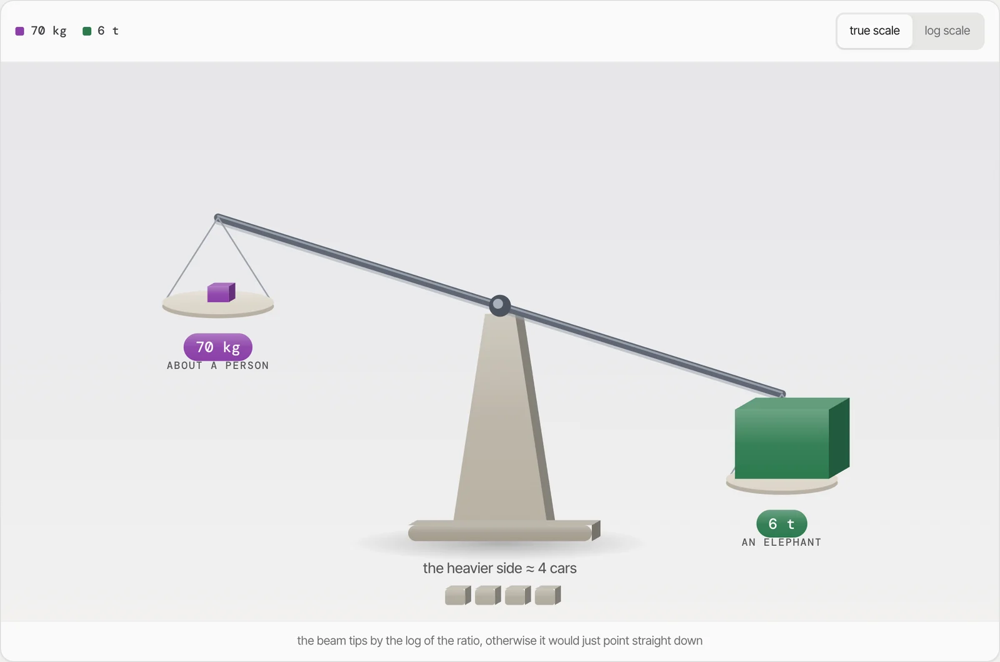
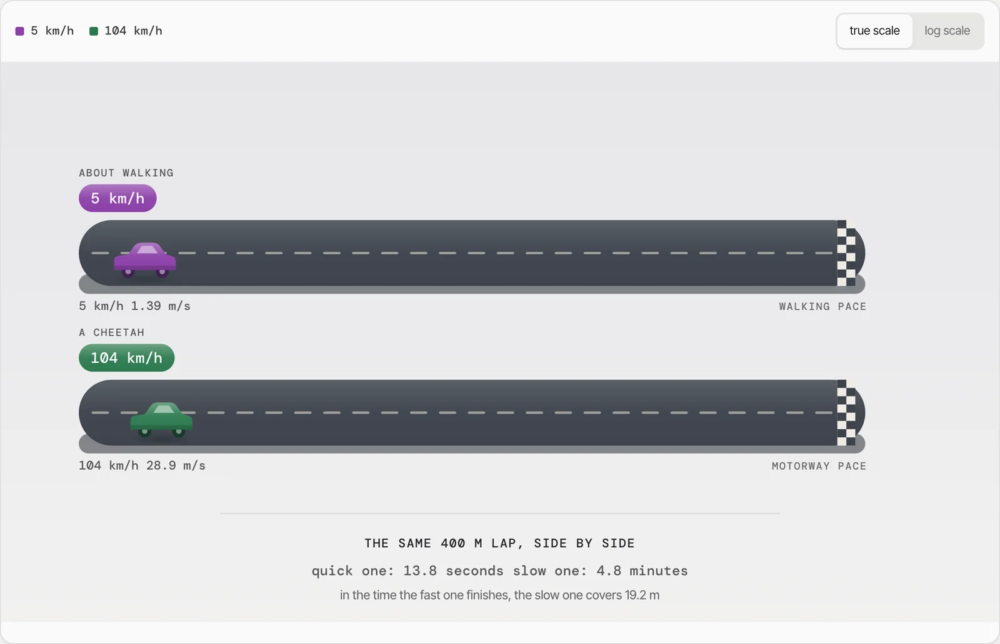
In the build: each category has its own drawing function. All eleven take the same input, the two amounts in one base unit and the scale mode. Each returns a picture on a fixed canvas 1,000 units wide and 560 tall, plus a one-line note. A shared kit draws the solids, the silhouettes and the landmarks, so the eleven pictures look like one product.
The height scene got the most care. Its landmarks are drawn from their real elevations.
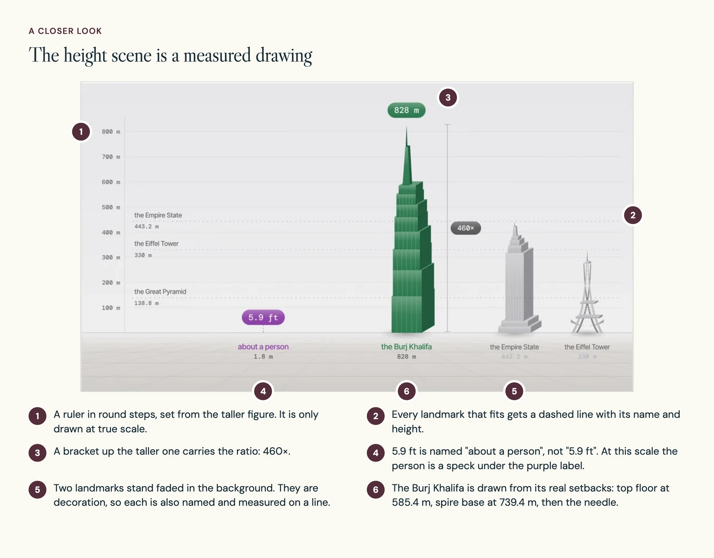
04 Decision 2
The true gap comes first, and a squashed picture says it is squashed
What you see: every comparison opens at true scale. If one side is too small to see, a line under the drawing says that is the point, and that log scale will show where it is.
A log scale, short for logarithmic scale, gives each tenfold step the same space. Huge gaps then fit on one screen, but the sizes are no longer in proportion.
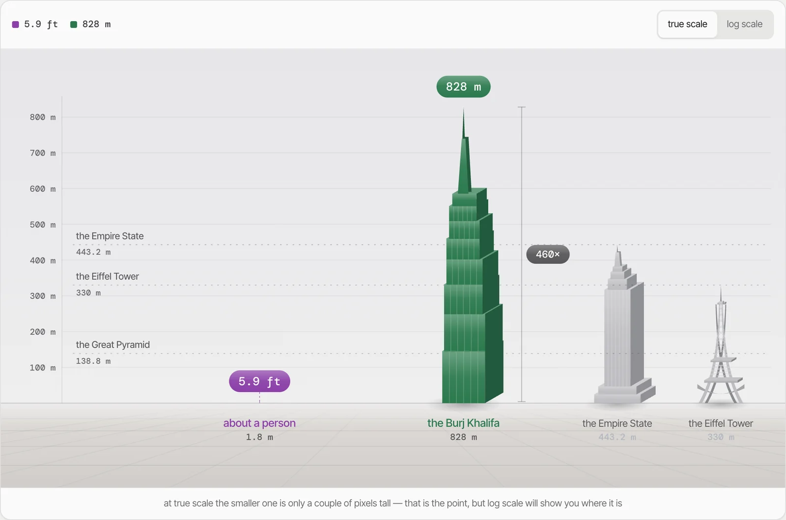
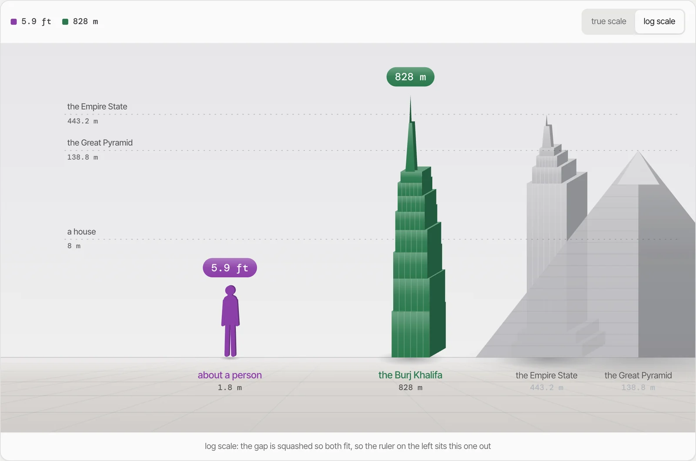
In the build: one shared function turns the two amounts into sizes for every category that follows the switch. At true scale it is a straight proportion, with a small minimum so the little side never vanishes. At log scale it squashes. Then each drawing removes whatever would now be false: the height ruler, and the person standing beside the cash and the cubes.
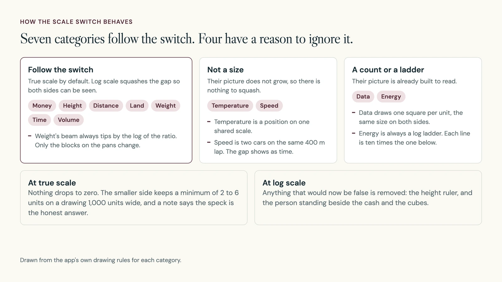
05 Decision 3
A number is called after the real thing it is close to
What you see: type 5.9 ft and the label says "about a person", drawn as a person. Type 828 m and it says "the Burj Khalifa". Put 5 ft against 7 ft and you get two people at their true heights, not two bars.
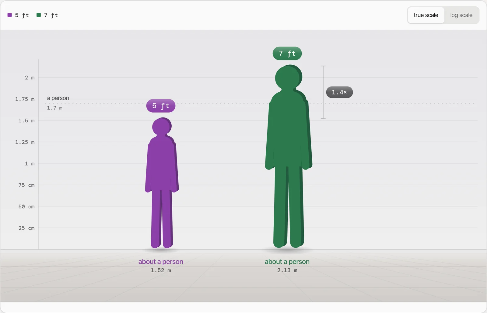
In the build: one small rule looks through that category's list of real things for the closest one, compared by ratio. If it is within 1.35 times, the amount takes its name. That one answer decides both which model is drawn and what the label says.
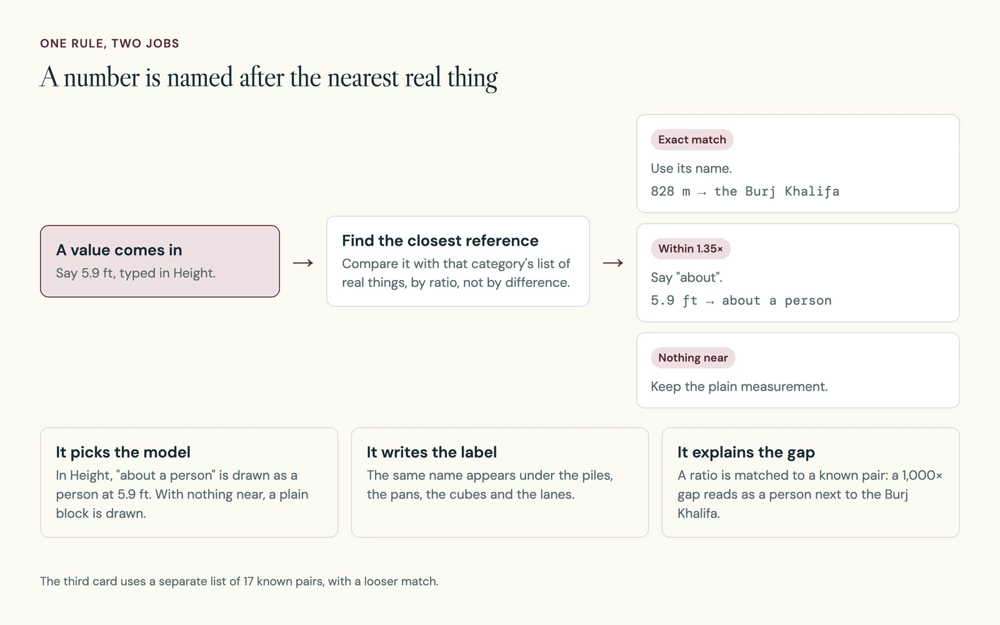
I applied the same thinking to money. A flat white used to read "$0.005 thousand". It now falls back to plain numbers and reads "$5".
06 Decision 4
On a phone, the drawing comes before everything else
What you see: on a phone, the drawing runs edge to edge and pans sideways inside its own frame. A fade on the right edge and a line under it say there is more to see. Everything you can tap is at least 40 px.
In the build: the first phone layout put the drawing's card 810 px down an 812 px screen. The main thing sat below the fold, the bottom of the first screen before any scrolling. I cut the space above it, and the card now starts at 666 px.
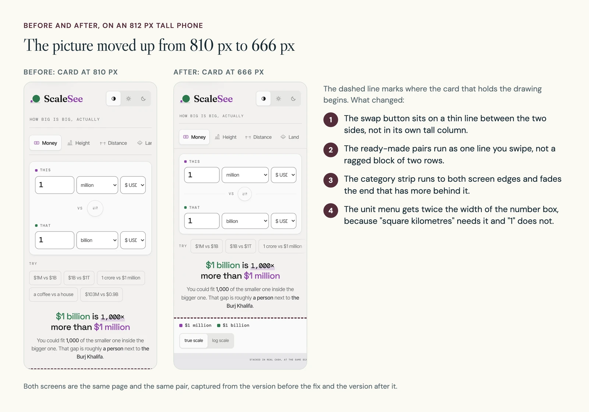
One fix needed a second pass. The category strip is three times wider than a phone, so the chosen category is scrolled back into view when it changes. It is checked again once the web font loads, because every label then gets wider. Without that pass, a shared link could open with its category off the screen.
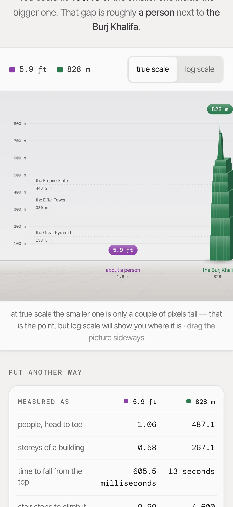
07 The look
One drawing in two palettes, with colours chosen by contrast
The two sides are always violet and green. Violet keeps a strong blue in it where the green has none. The aim is that the pair stays apart for people with colour blindness too. I have not tested that with anyone.
Both colours were worked out, not picked by eye. Each is the darkest point on its hue that still carries white label text at a contrast of 4.5 to 1, the usual minimum for small text.
In the build: the drawings take their sky, ground and text colours from a palette in the script. Switching the theme swaps that palette and draws the picture again. The violet and green are read back from the page styles each time, which is how they can be lighter in dark mode.
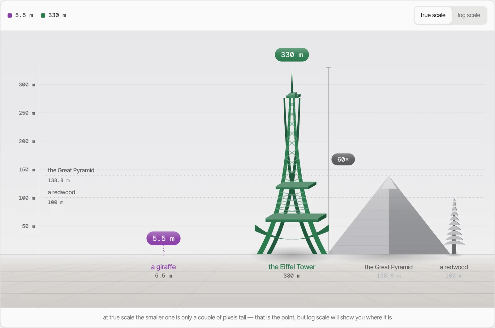
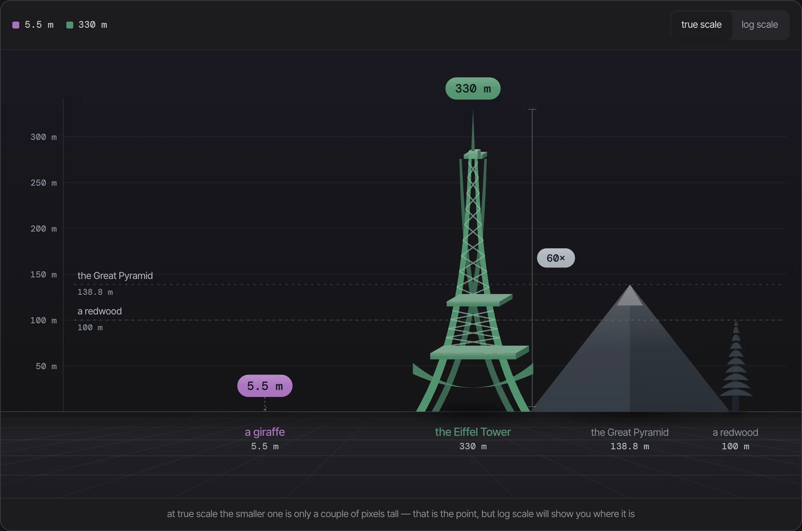
08 Accessibility
The drawing has a text version, and the colours meet AA
I checked ScaleSee against WCAG 2.1 AA, the common standard for accessible web pages. Every text colour, including the text inside the drawings, clears 4.5 to 1 against the surface it sits on, in both themes.
- The drawing is marked as an image, with a description written from the comparison: the sentence, the scale used and the note.
- A table under the drawing gives the same figures as text, with a caption and proper headers.
- Every control has a name. The number boxes have real labels, and the category and scale buttons report which one is on.
- Focus shows as a solid 2 px ring. Hit targets are at least 32 px, and 40 px on touch screens.
- The moving cars and filling bars stay still when the system asks for reduced motion.
- The faded landmarks in the height scene are below 3 to 1 on purpose. They are decoration, and each one is also named on a line.
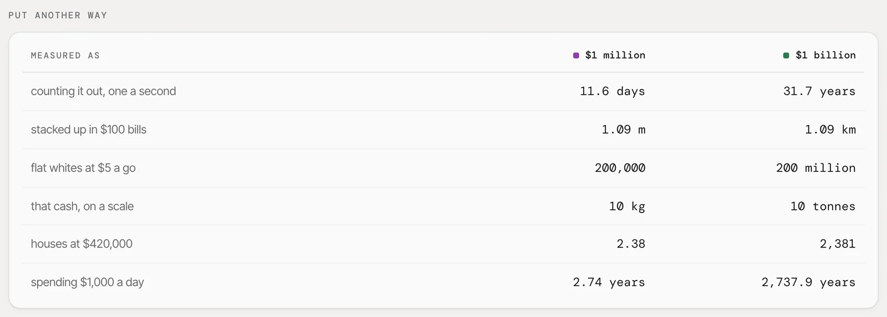
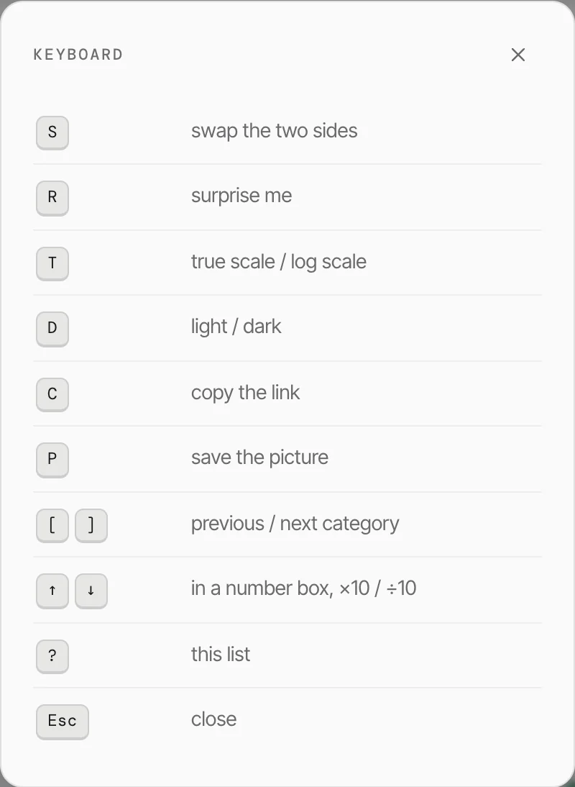
10 The build
Eleven drawing functions around one small state
ScaleSee uses no libraries and needs no server. It opens straight from a file. A short build script can also fold everything into one self-contained file, to send or host.
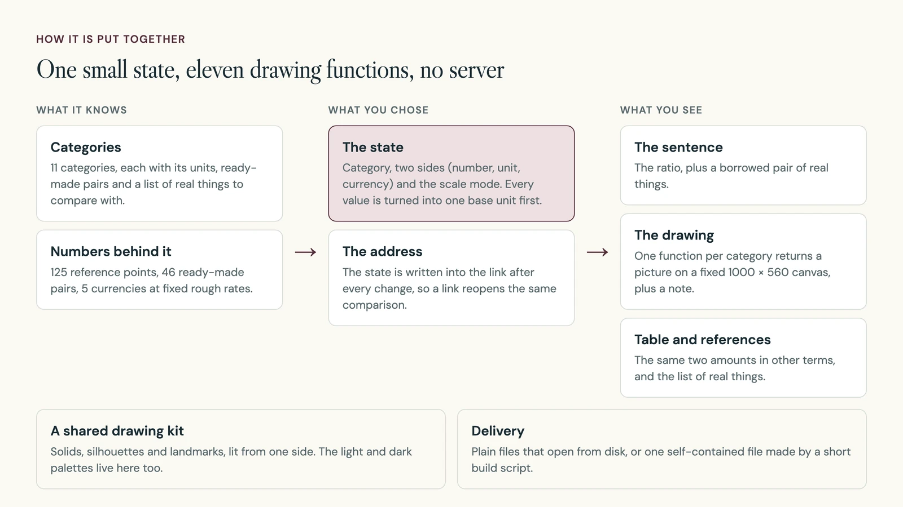
| Part | What I used |
|---|---|
| Page | HTML and one stylesheet |
| Logic | Plain JavaScript in seven files, with no framework |
| Drawings | SVG built by my own functions. The animation is SVG too, and is skipped under reduced motion |
| Type | Space Grotesk for the sentence, Inter Tight for the interface, DM Mono for every number, Fraunces for the name |
| Build | A Node.js script that inlines everything into one HTML file |
| Checks | None automated. There are no tests |
- 11
- categories, each with its own drawing
- 125
- real reference points across them
- 46
- ready-made pairs to try
- 3,085
- lines of HTML, CSS and JavaScript
- 3
- commits, all on 31 August 2026
The hardest parts were small and exact.
| Area | What was hard, and what I did |
|---|---|
| Landmarks | Each one is stored as its setback heights and widths divided by its own height, so the outline stays right at any size. The Burj Khalifa steps left and right on its way up, the way the real tower spirals. |
| Tiny amounts | At true scale a small side can round down to nothing. It keeps a minimum size, and the note under the drawing says the speck is the real answer. |
| Phone strip | A shared link could open with its category off the screen, because the labels grew wider when the web font arrived. The strip now re-centres after the font loads. |
| The name | The wordmark read "Scale See", because its two halves were laid out as separate boxes with a gap between them. It is now one word. |
11 Where it stands
It works, and nobody has tested it with readers
ScaleSee works on desktop and phone, in light and dark. I built it in August 2026, and its project history has three commits, all on 31 August.
I have no usage numbers, feedback or test results. These are also true:
- Landmark figures are real but rounded, for example 828 m for the Burj Khalifa and 150 tonnes for a blue whale.
- Currency rates are rough and fixed in the code: 83 rupees, 0.92 euros, 0.79 pounds and 150 yen to the dollar.
- There are no automated tests. The naming rule and the scale rules have only been checked by eye.
- A few labels still slip between singular and plural, for example "1 litres".
12 What is next
Find out whether people read the pictures correctly
- Ask readers to guess a ratio before and after each view, including an extreme gap and a log-scale picture. That would show whether the drawings help, and whether log scale misleads.
- Put the sentence and the scale into the saved picture, so it keeps its meaning when it is shared.
- Add tests for the naming rule and the scale rules.
- Fix the singular and plural labels.
13 What I learned
The speck is the answer, so help people find it
I learned to treat a tiny side as the answer, not as a bug to hide. The work went into helping people see it: a note under the drawing, a name they know, and a switch that is open about what it changes.
I also learned that a number reads better as a thing. "About a person" says more than "1.8 m", as long as the real number stays right under it.
Where would this place be as the plates move?